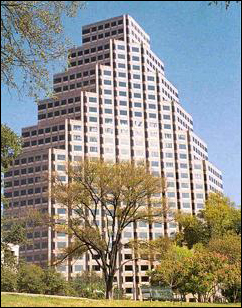

Services
The following types of Developments, Investments and Brokerage transactions have generated exceptional profits and returns for clients, investors and our own accounts:

• Acquisitions, Assemblage, Sale and Development of Farms, Ranches and acreage tracts;
• Master-planned & Mixed-use community development, golf course development;
• Multi-family apartment development and conversion for residential condominiums;
• Regional, neighborhood and local retail shopping centers;
• Restaurants both turn-key and built-to-suits;
• Commercial, Retail and Business site development and sales;
• Industrial Business Parks and individual sites;
• Major Section 1031 Tax-Deferred Redevelopments, Acquisitions and Exchanges;
• Land Development, Commercial & Residential Subdivisions;
• Joint-venture development and investments;
• Regional and Sub-regional community planning, development and management;
• Syndicated land, real estate development and income producing property venture interests;
• Major Central Business District Property Acquisitions, Assemblages, Planning, Demolition, Approvals and Redevelopments;
• Municipal and private water well field assemblages, development of storage, transmission and distribution facilities;
• Municipal and private wastewater treatment facilities, site acquisitions, planning & permitting;
• High-rise and mid-rise office developments, and conversions to residential & office condominiums;
• Municipal Utility District and Water Control and Improvement District creation, management and operation;
• Special State Legislative and Local area Governmental regulation planning and management.
This extensive diversity and range of business experience provides a solid foundation for making informed acquisition, investment and development decisions. Our dedication to being market leaders is only excelled by our long-standing commitment and belief in working harder than the competition.
| Carpenter & Associates, Inc. 12400 Highway 71 West Suite 350-115 Austin, Texas 78738 (512) 306-9993 |